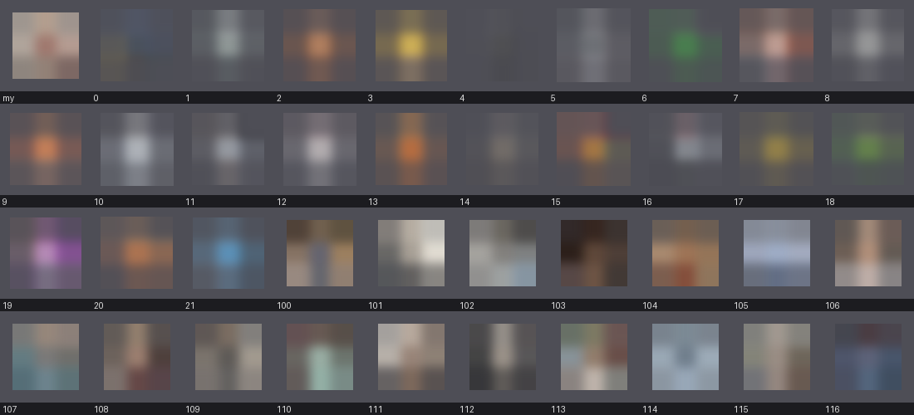
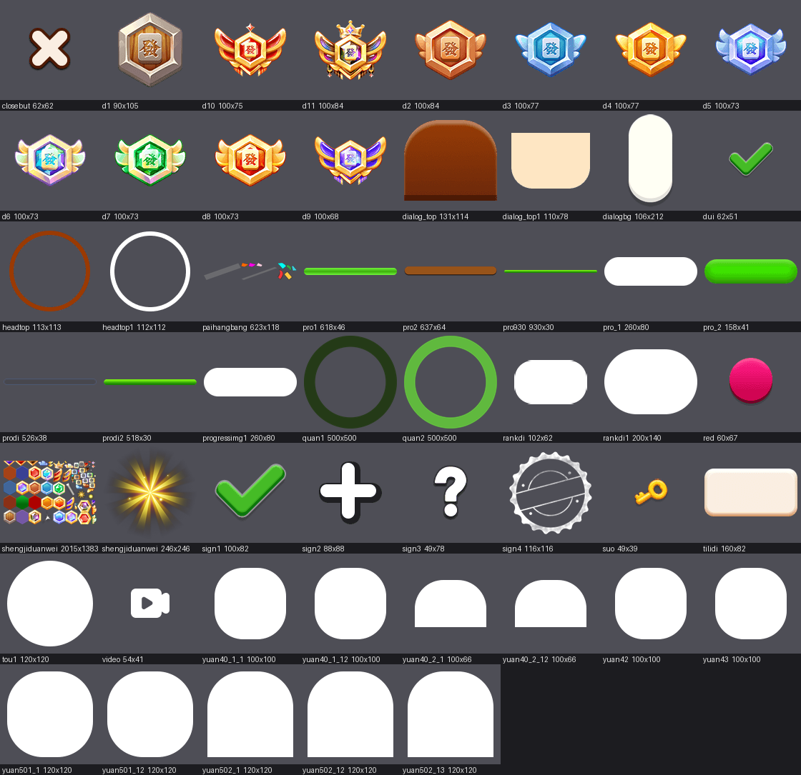
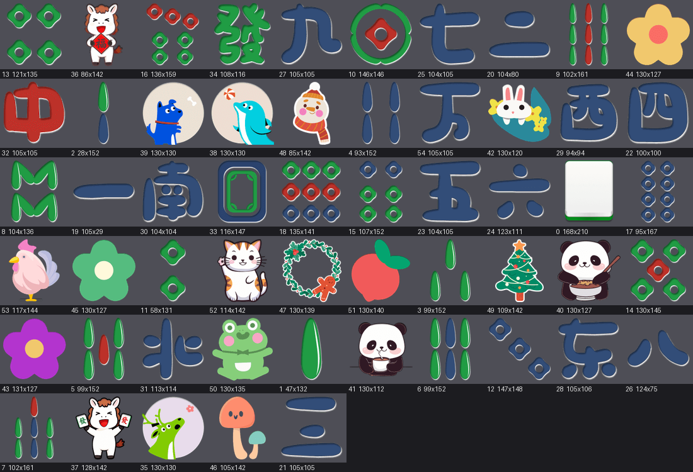

Что в игре уже наше, а что ещё чужое
Сборка port-art2, 08.09.2026. Скриншоты сняты из живой игры, картинки вырезаны прямо из файлов сборки. Все числа посчитаны машиной: каждый кадр сравнён с оригиналом попиксельно.
Коротко
Картинок в игре 428. Наших 140, чужих 288.
Отдельных файлов (атласы, звук): наших 6 из 84. Один файл это пачка картинок, поэтому проценты по файлам и по картинкам разные.
Как выглядит сейчас
Слева меню, справа уровень. Плитки, кнопки, монета, шестерня, подсказка, замок, стрелка назад, рамка аватара и надпись на загрузке - это уже рисунки Ани.

Меню

Уровень
Что такое «аватарки»
В меню слева вверху кружок с картинкой рядом с именем игрока. По нажатию открывается окно «Сменить аватар»: 15 картинок на выбор. Аня прислала ровно 15 своих, они сюда и лягут.
Но в игре лежит ещё один набор из 130 аватарок - их подставляют выдуманным соперникам в таблице рекордов. Там среди рисованных есть фотографии реальных людей, вытащенные прежним разработчиком из Яндекс Игр. Ниже кусок этого набора, я нарочно размыл лица.

заменить обязательно Публиковать игру с чужими фотографиями нельзя.
Что такое «таблица рекордов» и «ранги»
Кнопка «Таблица рекордов» в меню. Внутри строки соперников: место, аватарка, имя, значок ранга («Новичок») и уровень. Ранг растёт по мере игры, значков одиннадцать штук.
Картинки этого экрана лежат отдельной пачкой, 50 штук, и вся она пока чужая. Важно: из этой же пачки собраны все окна игры - шапка окна, крестик, фон, галочки, полосы прогресса. То есть пока эта пачка чужая, любое окно в игре нарисовано прежним разработчиком.

Аня уже прислала под это: кольца аватарки, галочки, четыре медали, панели окон и полосы прогресса. Раньше я не мог их поставить, потому что не было координат этих картинок внутри файла. Сегодня снял координаты из работающей игры, теперь поставить можно.
Что такое «третья тема плиток»
В меню есть кнопка «Тема». Внутри три набора плиток: «Классика», «Покер» и «Милый». Аня нарисовала два набора, третий («Милый», с пандой) целиком чужой - 60 картинок.


решение Либо убираем третью тему из игры, либо Аня рисует ещё 60 граней. Убрать проще, и Леха уже говорил, что второй набор для YouTube не нужен.
Что ещё осталось чужим в интерфейсе
26 картинок. Крупные и заметные: подложка игрового поля, панда за доской, бамбук в углу, сетка на доске, звёзды за уровень, рука в обучении. Остальное мелочь.

Что из присланного Аней ещё не стоит в игре
Плитки использованы все, 55 из 55. Из интерфейса поставлено 25 файлов из 69. Вот что лежит без дела:

Большая часть - это как раз ранги и окна, они встанут после сегодняшней работы с координатами.
Реально лишние: три горизонтальных фона (игра вертикальная), лавровые ветки, панда-победа,
переключатели настроек (в игре они другой конструкции) и панда bd_2 - её пропорция
не лезет в узкую полоску за доской.
Что дальше
| Шаг | Зачем |
|---|---|
| Поставить ранговый арт Ани | сразу закроет все окна игры и таблицу рекордов |
| Решить про третью тему | убрать или просить ещё 60 граней |
| Заменить 130 аватарок | там фото живых людей, это блокер |
| Дорисовать 26 кадров интерфейса | подложка поля, панда, звёзды, сетка |
| Заменить 21 звук | сейчас своя только фоновая музыка |
Страница для команды. Внутри есть картинки исходной игры - они показаны как раз для того, чтобы было видно, что ещё предстоит заменить. Фотографии из чужого набора аватарок намеренно испорчены до неузнаваемости. Поисковикам страница закрыта.